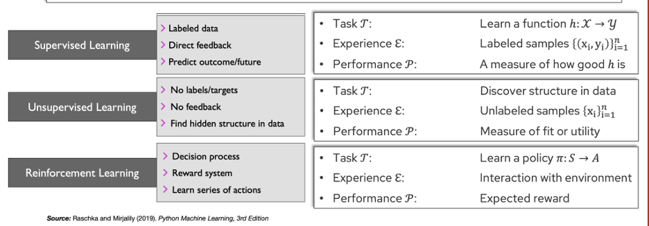
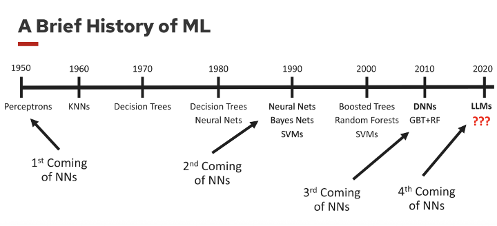
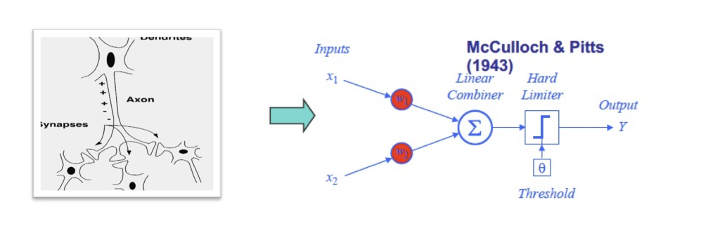
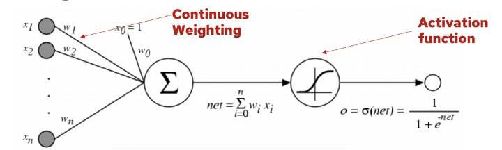
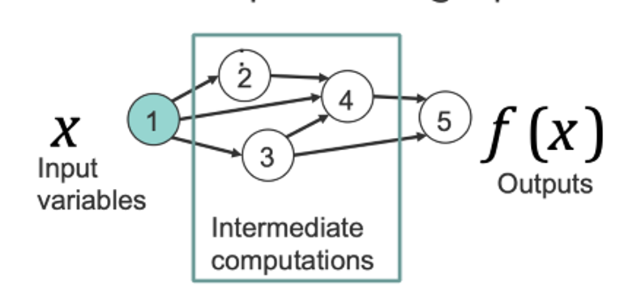
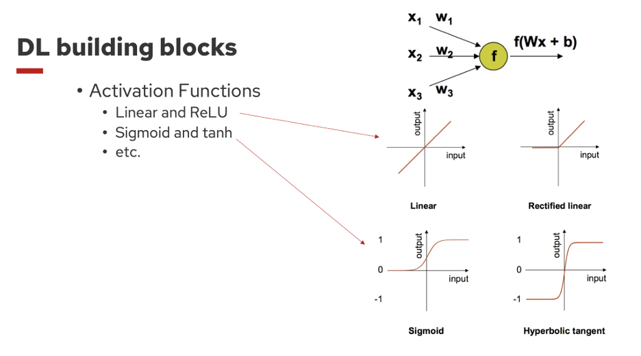
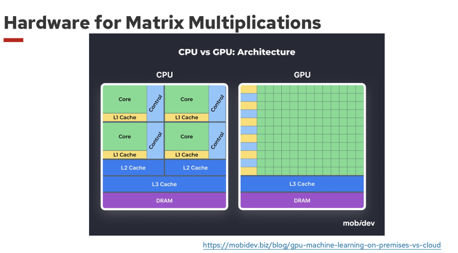

Lecture 02
A Brief History of Deep Learning
Course: STAT 453 — Introduction to Deep Learning and Generative Models
Lecture: 02 — A Brief History of Deep Learning
Lecturer: Ben Lengerich
Notes prepared and improved by: Abel Zewdie
Reminders
- If you intend to scribe for a class lecture, only sign up once.
- All recorded lectures are available on Kaltura.
-
HW1 is posted on the course website.
- Due: September 19 (via Canvas)
- Assignment: Implement a perceptron in Python (basic one-layer neural network).
Recap: What Is Machine Learning?
Formally, a computer program is said to learn from experience
( \mathcal{E} ), with respect to some task ( \mathcal{T} ) and performance measure ( \mathcal{P} ), if its performance at ( \mathcal{T} ),
as measured by ( \mathcal{P} ), improves with ( \mathcal{E} ).

Data Representation
Structured Data
- Stacking feature vectors results in a feature (design) matrix
- ( n ): number of samples
- ( m ): number of features
Unstructured Data
- Images consist of raw pixel values and are not naturally labeled
-
Convolutional Neural Networks (CNNs) represent image data as:
- 1st dimension: number of samples
- 2nd dimension: number of channels (1 = grayscale, 3 = RGB)
- 3rd and 4th dimensions: height and width
- This format is known as NCHW representation
Machine Learning Jargon
- Training a model: fitting / parameterizing a model / learning from data
- Training example: record, instance, sample
- Feature: observation, predictor, input, independent variable, covariate
- Target: outcome, ground truth, output, response variable, label
- Prediction: the model’s estimate of the target
History of Machine Learning

- Perceptrons: Simple one-layer networks; early optimism
- k-Nearest Neighbors (kNN): Learning via similarity-based lookup
- Decision Trees: Deterministic and interpretable models
- Neural Networks: Renewed interest after early skepticism
- AI Winter (1990s–2000s): Neural networks underperformed, but research continued
- Deep Neural Networks: Enabled by improved hardware and large datasets
- Overparameterized Models: Inductive biases guide learning despite weak classical guarantees

Artificial Neurons and Perceptrons
Neural computation models were first discussed in 1943 by McCulloch and Pitts.
- Inspired by neuroscience
- Inputs with fixed weights (+1, −1) and a threshold
- Distinction between excitatory and inhibitory signals
Perceptrons

- Inputs are linearly combined and passed through an activation function
- Common activations include sigmoid and tanh
- Regression view: ( f: X \rightarrow Y ) for scalar ( Y )
Assume:
[ Y \sim \mathcal{N}(f(x), \Sigma^2) ]
Then maximizing likelihood is equivalent to minimizing squared error:
[ \arg\min_w \sum_i \frac{1}{2}(y_i - f(x_i; w))^2 ]
Weight update rule:
[ w_d = w_d + \eta \sum_i (y_i - o_i)\, o_i(1 - o_i)\, x_d^i ]
- Residual: ( y_i - o_i )
- ( o_i(1 - o_i) ) is maximized at ( o_i = 0.5 )
- Larger residual and uncertainty lead to larger parameter updates
Can a Perceptron Represent XOR?
Answer: No.
Assume weights ( w_1, w_2 ) exist such that:
-
If ( x_1 = x_2 ), then
( \sigma(w_1 x_1 + w_2 x_2) < \theta ) -
If ( x_1 \neq x_2 ), then
( \sigma(w_1 x_1 + w_2 x_2) \ge \theta )
This leads to a contradiction when all XOR cases are considered.
Conclusion: XOR is not linearly separable, so a single-layer perceptron cannot represent it.
Backpropagation
Neural Networks as Computation Graphs
Neural networks can be viewed as compositions of functions represented as computation graphs.

Using the chain rule and working backward:
[ \frac{\partial f_n}{\partial x} = \sum_{i \in \pi(n)} \frac{\partial f_n}{\partial f_i} \frac{\partial f_i}{\partial x} ]
- Discovered independently by multiple groups
- Formalized by Rumelhart, Hinton, and Williams (1986)
- Sparked renewed progress in neural networks
About the Term “Deep Learning”
“Representation learning is a set of methods that allows a machine to be fed with raw data and to automatically discover the representations needed for detection or classification. Deep learning methods are representation-learning methods with multiple levels of representation.”
— LeCun, Bengio, & Hinton (2015)
Activation Functions

- If all layers are linear, the entire model is linear
- ReLU: most commonly used in modern deep learning
- Sigmoid: bounded between 0 and 1 and interpretable as a probability
Hardware

CPU
- Centralized control
- Local cache memory
GPU
- Optimized for matrix multiplication
- Shared control and cache across cores
- Highly parallel and fast data transfer
Large-Scale Unsupervised Learning
From GPT-1 (2018) to GPT-4):
- Parameters: 1.5B → >1T
- Layers: 12 → >96
- Attention heads: 12 → >96
- Embedding dimension: 768 → >12,288
- Context length: 512 → 128k
- Vocabulary: 40k → >50k tokens
- Multimodal tokenization (e.g., image patches)
- Mixture-of-Experts architectures
- Training data: ~5GB → ~50TB
- Reinforcement learning for alignment
Open Directions
- Verifiable rewards (e.g., code and math correctness)
- Vision–language multimodal models
- Large-scale reinforcement learning
- Model uncertainty and hallucinations
- Model editing and interpretability
- Model synthesis and communication